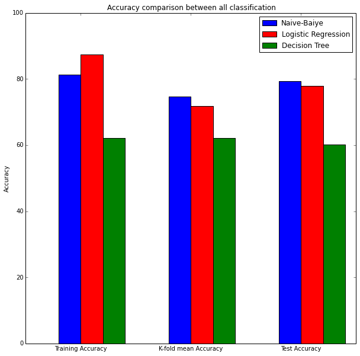
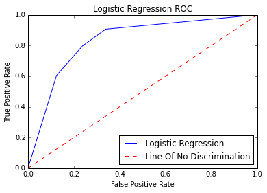

Assignment 4 Writeup by Pratibha
Introduction
Twitter is an online micro-blogging and social-networking platform which allows users to write short status updates of maximum length 140 characters. It is a rapidly expanding service with over 200 million registered users out of which 100 million are active users and half of them log on twitter on a daily basis - generating nearly 250 million tweets per day . Due to this huge amount of users we can achieve a reflection of public sentiment by analysing the sentiments expressed in the form of tweets. Analysing the public sentiment is important for many applications such as firms trying to find out the feedback of their products in the market, predicting political elections and predicting socioeconomic phenomena like stock exchange. The aim of this assignment is to use Apache Spark's MLlib classifiers to determine the sentiment of a given tweet.
Problem Statement
The problem statement is , given a message, classify whether the message is of positive (1), negative (0) sentiment by using Apache Spark's mllib Naive Bayes classifier, Logistic Regression classifer and Decision tree classifer.
Domain Introduction
Analyzing tweet sentiments comes under the domain of “Pattern Classification” and “Data Mining”. The process of finding "useful" patters can be done using Supervised or Unsupervised learning methods. In supervised learning, the output datasets are provided which are used to train the machine and get the desired outputs whereas in unsupervised learning no datasets are provided, instead the data is clustered into different classes .Here , we are making use of “Machine Learning” techniques such as Naive Bayes, Logistic Regression, and Decision Tree for accurately classifying the given test data according to whichever pattern model best describes them.
The Apache Spark Setup
1. Tweet processing steps
Tweet text formatting techniques are :
2)Import the necessary libraries which are required for reading the tweets,cleaning the tweets like nltk, regular expressions and the spark’s mllib which are required for tweet classification.
3)Load the training and testing dataset as an RDD using SparkContext object sc.
4)Parse each tweet by converting to lowercase and do the following processing steps which are defined in cleantweets() function.
- Replace a word containing ‘http’/’https’ with URL using regular expressions as we are interested in analyzing the tweet text only.
- Replace a word containing ‘www.’ with URL using regular expressions as we are interested in analyzing the tweet text only.
- Replace a word containing ‘@’ with AT_USER as we are interested in analyzing the tweet text only.
- Tokenization/Lexical analysis is the process of breaking a stream of text into words, symbols and other meaningful elements called “tokens”. Tokens can be separated by whitespace characters and/or punctuation characters. The list of tokens becomes input for further processing such as parsing or text mining.
- For each token in a tweet do the below processing steps:
- Stemming - It is the process of normalizing a text by reducing a derived word to its root or stem. For example a stemmer would reduce the phrases “feeling”, “feels” to the root word “feel”.This process makes the comparison between words simpler, as we do not need to deal with complex grammatical transformations of the word. Here, we are using nltk’s Porterstemmer to perform stemming.
- Further Formatting
- Replace #token with token .
- Ignore words which does not start with alphabets using isalpha() function.
- Check for any stopwords like ‘a’,’an’,’me’,’the’ in the stopwords list and remove them as they do not provide any valuable information.
- Remove all the punctuations from the tokens as they do not provide any valuable information.
- Replace all multiple occurrences(more than 2) of characters to just 2.
Finally, the output of the function is the clean tweet which can be further considered for analysis.
2. Feature space
HashingTF is a Transformer which takes sets of terms and converts those sets into fixed-length feature vectors. It transforms a bag of words into a vector of term frequencies by applying a hash function to each term.Unigrams are considered here.The size of the feature space is 50,000 to lessen the chances of collisions, because the vector has a finite number of elements, it's possible that two terms will map to the same hashed term.
3. Parameter tuning on three classifiers: NB, LOG and DT
For the Decision tree classifier, we have reduced the number of features by trial and error method as a large value would run forever and the notebook timed out.
4. Performance Metrics
NB Classifier values
Naive-Bayes classifier train-train accuracy - 81.3175
10-fold cross-validation accuracy values are
| Naive-Bayes classifier K-fold accuracy | 75.0285207250602 |
| Naive-Bayes classifier K-fold accuracy | 73.97106510351709 |
| Naive-Bayes classifier K-fold accuracy | 75.05233345647088 |
| Naive-Bayes classifier K-fold accuracy | 75.22471198885935 |
| Naive-Bayes classifier K-fold accuracy | 73.80715705765407 |
| Naive-Bayes classifier K-fold accuracy | 74.51632778804684 |
| Naive-Bayes classifier K-fold accuracy | 75.36597677940435 |
| Naive-Bayes classifier K-fold accuracy | 74.80867346938776 |
| Naive-Bayes classifier K-fold accuracy | 74.73111633081963 |
| Naive-Bayes classifier K-fold accuracy | 74.76728310785651 |
| Naive-Bayes classifier average for K-fold classifier | 74.72731658070767 |
Naive-Bayes Test accuracy - 79.38718662952647
Performance metrics for Naive-Bayes
LOR Classifier values
Logistic Regression train-train classifier - 87.36
10-fold cross-validation accuracy values are
| Logistic Regression classifier K-fold accuracy | 71.88322265380278 |
| Logistic Regression classifier K-fold accuracy | 72.70918811388786 |
| Logistic Regression classifier K-fold accuracy | 71.555336455509 |
| Logistic Regression classifier K-fold accuracy | 71.33199799699548 |
| Logistic Regression classifier K-fold accuracy | 71.59815069348994 |
| Logistic Regression classifier K-fold accuracy | 71.11616736190115 |
| Logistic Regression classifier K-fold accuracy | 72.08569628229363 |
| Logistic Regression classifier K-fold accuracy | 71.74314183786443 |
| Logistic Regression classifier K-fold accuracy | 72.44084524863976 |
| Logistic Regression classifier K-fold accuracy | 71.78781433754536 |
| Logistic Regression classifier average for K-fold classifier | 71.82515609819293 |
Logistic_Regression Test accuracy - 77.99442896935933
Performance metrics for Logistic Regression
DT Classifier values
Decision tree train-train classifier - 62.21875
10-fold cross-validation accuracy values are
| Decision tree classifier K-fold accuracy | 62.077173640691555 |
| Decision tree classifier K-fold accuracy | 62.432915921288014 |
| Decision tree classifier K-fold accuracy | 61.7165019391968 |
| Decision tree classifier K-fold accuracy | 62.03406566279931 |
| Decision tree classifier K-fold accuracy | 61.32855908136807 |
| Decision tree classifier K-fold accuracy | 61.8779694923731 |
| Decision tree classifier K-fold accuracy | 62.189980158730165 |
| Decision tree classifier K-fold accuracy | 62.116545521744484 |
| Decision tree classifier K-fold accuracy | 63.00227445034117 |
| Decision tree classifier K-fold accuracy | 62.51739405439595 |
| Decision tree Regression classifier average for K-fold classifier | 62.129337992292854 |
Decision tree Test accuracy - 60.16713091922006
Performance metrics for Logistic Regression
| Classifier | Naive-Bayes | Logistic_Regression | decision-tree |
| Training Accuracy | 81.3175 | 87.36 | 62.21875 |
| 10-fold cross validation Accuracy | 74.72731658070767 | 71.82515609819293 | 62.129337992292854 |
| Test Accuracy | 79.38718662952647 | 77.99442896935933 | 60.16713091922006 |
| Precision | 0.7934782608695652 | 0.7754010695187166 | 0.510989010989011 |
| Recall | 0.8021978021978022 | 0.7967032967032966 | 0.6326530612244898 |
| F1 measure | 0.7978142076502732 | 0.7859078590785907 | 0.5653495440729484 |
From the above comparison table, we can say that when the test is done on the data on which it is trained, logistic-regression performs really well with accuracy about 87% , but when it is tested using test data which is different from train data, which can be seen from Test Accuracy and 10-fold cross-validation Accuracy, Naive-Bayes classifer performs well when compared to Logistic-Regression and Decision-tree.
| General Confusion Matrix | Prediction says Yes | Prediction says No |
| Observation says Yes | True positive | False negative |
| Observation says No | False positive | True negative |
| Confusion Matrix for Naive_Bayes_classifier | Prediction says Yes | Prediction says No |
| Observation says Yes | 146 | 36 |
| Observation says No | 38 | 139 |
| Confusion Matrix for logistic-regression classifer | Prediction says Positive | Prediction says Negative |
| Observation says Positive | 145 | 37 |
| Observation says Negative | 42 | 135 |
| Confusion Matrix for decision-tree classifer | Prediction says Positive | Prediction says Negative |
| Observation says Positive | 93 | 54 |
| Observation says Negative | 89 | 123 |
5. Plot training accuracy, 10-fold cross-validation accuracy and test accuracy together using matplotlib
Plot
By observing the above plot, we can say that logistic-regression classifer overfits the most because it gives a high accuracy on the training data but the accuracy decreases when tested using a data different from train data,on the other hand Naive-Bayes classifier performs well as it maintains consistency with all the data.
6. Precision, recall, f1-score, confusion matrix (true positive, true negative, false positive, false negative)
Confusion matrix
| Confusion Matrix | Prediction says Positive | Prediction says Negative |
| Observation says Positive | True positive | False negative |
| Observation says Negative | False positive | True negative |
Precision
Precision (also called positive predictive value) is the fraction of retrieved instances that are relevant.
Here, prediction is given by, true positives/(true positives + false positives)
Recall
Recall (also known as sensitivity) is the fraction of relevant instances that are retrieved
Here, Recall is given by, true positives/(true positives + false negatives)
F1 score
F1 score (also F-score or F-measure) is a measure of a test's accuracy. It considers both the precision p and the recall r of the test to compute the score: p is the number of correct positive results divided by the number of all positive results, and r is the number of correct positive results divided by the number of positive results that should have been returned. The F1 score can be interpreted as a weighted average of the precision and recall, where an F1 score reaches its best value at 1 and worst at 0.
Here, F1 score is given by 2*Precision*Recall/(Precision+Recall)
7. ROC curve and report the area under the curve
Receiver Operating Characteristic curve (or ROC curve) is a plot of the true positive rate against the false positive rate for the different possible threshold of a diagnostic test.
Naive-Bayes Area under ROC: 0.7937542683305395
Logistic-Regression Area under ROC: 0.7797075805550382
Decision-tree Area under ROC: 0.6064208702348864
By observing the Area under ROC for all the three classifiers, we can determine that Naive_Bayes_classifier is more accurate
ROC Curve using logistic-regression
By the above graph, we can determine that the test is more accurate as the curve follows the left-hand border and then the top border of the ROC space
Since there are no methods to extract True Positive rates and False Positive rates for different threshold using naive-bayes model,the ROC plot for Naive-Bayes is not plotted
8. Top 20 most informative features for all three classifiers
We tried our level best to find the feature probabilities by using the tweet probabilities, but since only LR provides a way to find the probabilities, the program became complex and we were not able predict feature words correctly. We also know that term frequencies does not mean informative features and hence that implementation was not considered.
9. Best classifier
Naive-Bayes classifier is the best classifier.The Naive Bayes model assumes each feature to be independent of all other features.Thus, for example, if you had a feature "best" and another "world's best", then their probabilities would be multiplied as though independent, even though the two are overlapping.By observing the graph(section 5) above we see that logistic-regression overfits the most.An overfit model is one that is too complicated for your data set. When this happens, the regression model becomes tailored to fit the quirks and random noise in the training data rather than reflecting the test data. If we test using a data different from training data, it would have its own quirks, and the original overfit model would not likely fit the new data. The sample size limits the number of terms that you can safely include before you begin to overfit the model.Larger sample sizes allow you to specify more complex models. For trustworthy results,the sample size must be large enough to support the level of complexity that is required by the question. If the sample size isn’t large enough, we won’t be able to fit a model that adequately approximates the true model for your response variable.
Cross-validation is a method by which we can detect if model overfits by determining how well the model performs to a different data set which was not there in the training data by partitioning the data observations.By observing the plot for 10-fold-cross-validation and test accuracy, it is evident that Naive-Bayes classifier performs better than Logistic-Regression and decision-tree.Hence,F1 score which can be interpreted as a weighted average of the precision and recall is the highest for naive-bayes classifer.
10. Sample tweets and their prediction probabilities
Some 20 correctly classified tweets
Top 5 correctly classified tweets
Some 20 incorrectly classified tweets
Top 5 incorrectly classified tweets